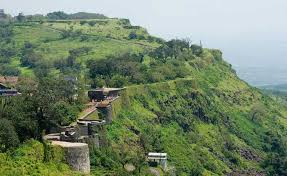

पन्हाळा किल्ला
Location : Click Here For Google Map
- माहिती
- पन्हाळा किल्ला महाराष्ट्र राज्याच्या कोल्हापूर जिल्ह्यात स्थित एक ऐतिहासिक किल्ला आहे. हा किल्ला पन्हाळा पर्वताच्या शिखरावर वसलेला आहे. पन्हाळा किल्ल्याचा इतिहास छत्रपती शिवाजी महाराजांच्या काळाशी संबंधित आहे. किल्ल्याचा वापर मुख्यतः सैन्याच्या तळ म्हणून करण्यात आला होता. किल्ल्याचे स्थापत्य आणि संरचनात्मक वैशिष्ट्ये ऐतिहासिकदृष्ट्या अत्यंत महत्त्वाची आहेत. किल्ल्याच्या अवशेषांमध्ये बुरुज, भव्य दरवाजे, तलाव आणि पाण्याच्या टाक्या दिसतात.
पन्हाळा किल्ल्याचा इतिहास विशेषत: त्याच्या प्राचीन महत्त्वामुळे प्रसिद्ध आहे. किल्ल्याचा महत्त्वाचा भाग म्हणजे तो शिवाजी महाराजांच्या काळातील एक प्रमुख तटबंदी आणि त्याच्यावर लढल्या गेलेल्या ऐतिहासिक लढाया. किल्ल्याच्या शिखरावरून आसपासचा परिसर, डोंगररांगा आणि शेताच्या मैदानांचा सुंदर दृश्य दिसते.
आजकाल, पन्हाळा किल्ला पर्यटकांसाठी एक आकर्षक स्थळ बनला आहे. किल्ल्याच्या अद्वितीय स्थापत्यशास्त्र, ऐतिहासिक महत्त्व, आणि किल्ल्यावरून दिसणारे अप्रतिम दृश्य पर्यटकांना आकर्षित करतात. किल्ल्याच्या ऐतिहासिक महत्त्वामुळे तो एक लोकप्रिय पर्यटनस्थळ आहे.
Explore the historical beauty
